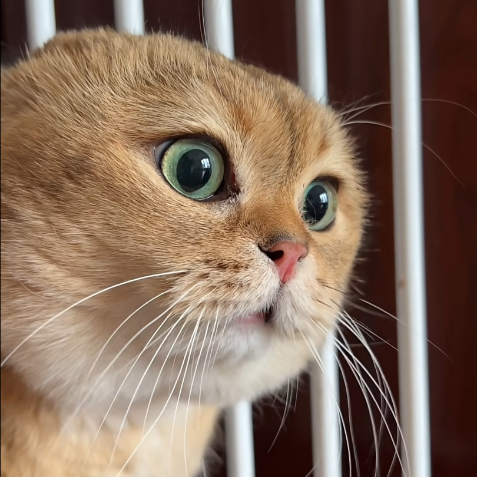
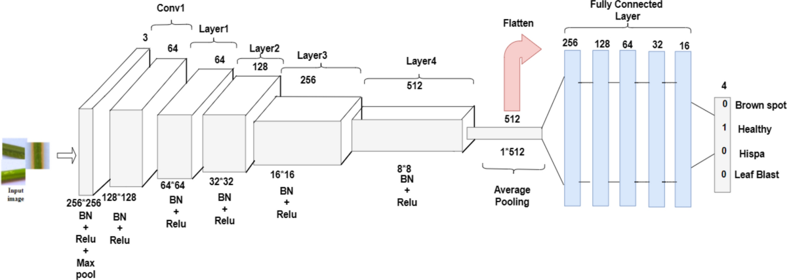
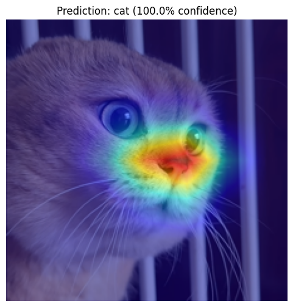
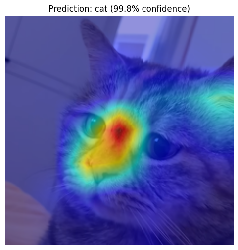
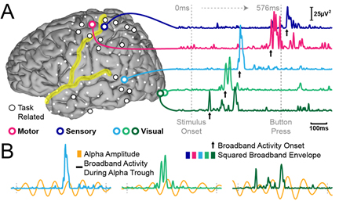

Expainable AI | Computer Vision | General Public | Code Tutorial
Ever wondered how your iphone photos knows there's a cat in your photo — and not just a fluffy furry ball?
To figure out how AI sees your photos and make decisions, scientists came up with Grad-CAM (Gradient-weighted Class Activation Mapping),
a useful AI heat vision that enable us to see the focus area of AI.
In this blog, I'm going to illustrate this XAI/explainbale AI tool using two famous meme cats.

BozaiGuangdang
1. First Peak Into The Black Box
This, is a graph of a ResNet 50, a computer vision neural network that transform cat pictures into a prediction.

ResNet Structure
The neuron nodes looks so horrible, and how is it possible to look into this black box? It works simply like this: when you upload a picture of your cat to an AI model, it confidently says: “This is a cat!” 😺 by giving 0 or 1 indicating weather it is a cat.
But you wonder — what made you come up with this answer?
Grad-CAM came in and said take this -- an X Ray filter that shows where the AI was “looking” when it decided “cat.”
It highlights important regions in the image using color — red for “very important,” blue for “meh.”
Original Bozai

Bozai after Grad-CAM
Original Guangdang

Guangdang after Grad-CAM
2. How It Works
From above picture we can see that the model mainly focus on the nose to distinguish cats from dogs. It is reasonable since cats have shorter nose than dogs. (PS: this model is trained specifically to distinguish cats and dogs, you can check the detail in tutorial link below)
In the last layer of the ResNet, the original picture was broken down into many little pictures showing every possible detail:
fur texture, ear triangles, nose dots, tail curve, etc. Grad-CAM traces which parts of the sub-images caused the biggest reaction in the AI's
final decision. Then it projects that excitement back onto the original picture — like a thermal camera for AI attention.
It's like applying Electroencephalogram(EEG)/"brain scan" to human brain to see what is going on when we think. So Grad-CAM ask: "Show me where your brain went brrr 🧠💥 when you saw this cat!"

Brain Scan with EEG
Here is a jupyter notebook tutorial on Grad-CAM if you have some knowledge about Pytorch and want to explore more on applying Grad-CAM to general ResNet after transfer learning.
The reward is that you can replicate the heatmap of Grad-CAM result just like I posted in this blog. (There could be some changes made for the tutorial so the heatmap may not be exactly the same)
3. Why It Matters
Grad-CAM is cool because it helps humans trust and debug AI. Since the focus of AI is marked out on the picture, it is easy for people to see what is the real focus
and we can compare the focus with human rationale and check if it is reasonable to make such judgement. For example,
if the back ground of a sofa determines a cat, there might be something wrong with the model. And people may need to investigate or even retrain the model.
Some might say it is okay to predict a cat from the surrounding environment as long as the prediction is correct.
But the whole thing can be critical when safety is involved such as self-driving or criminal detection.
4. Key Takeout
Grad-CAM = AI's highlight reel of what mattered most when it made a decision.
It helps us to understand how AI think and thus we can debug or train the AI based on human rationale (AI alignment).
So next time your AI says "this is a cat," you can say: "Prove it. Show me the Grad-CAM result." 😼🔥